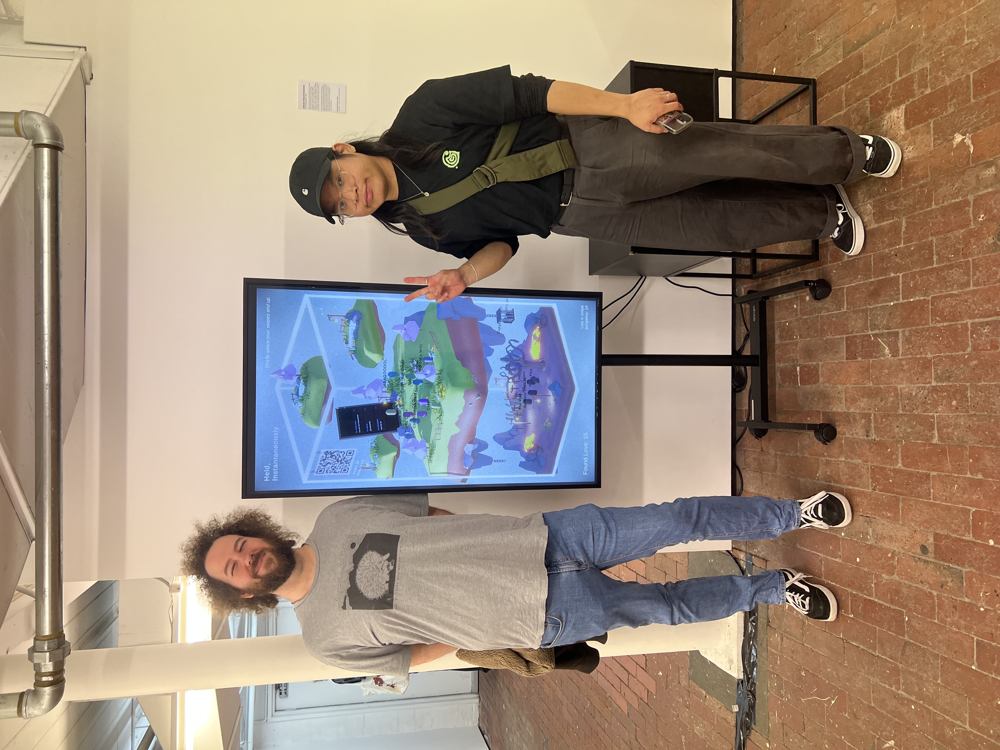
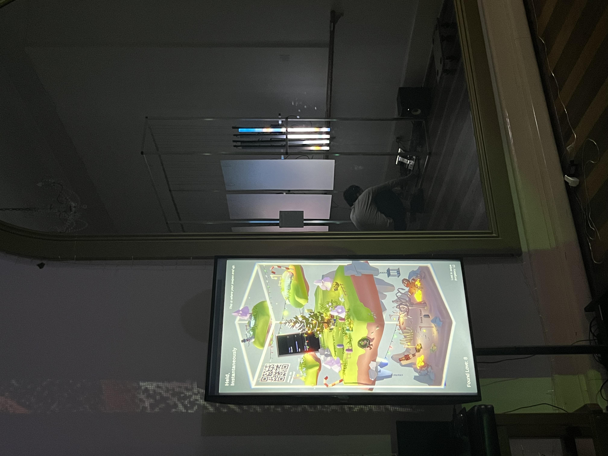
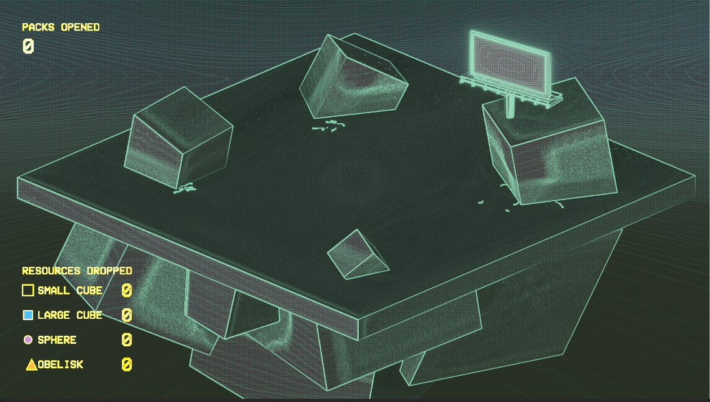
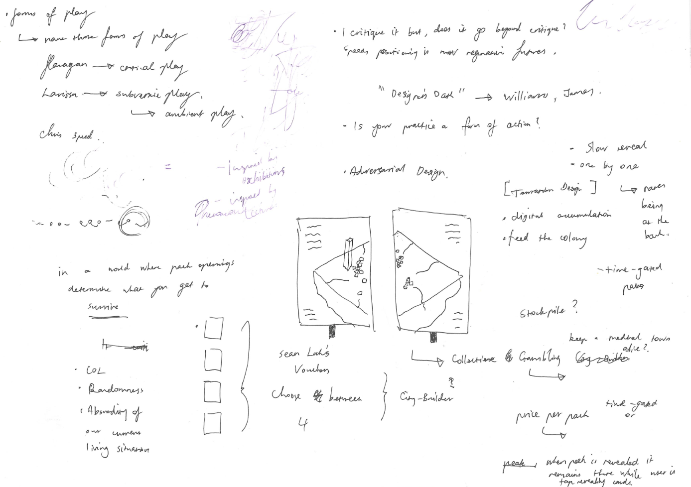
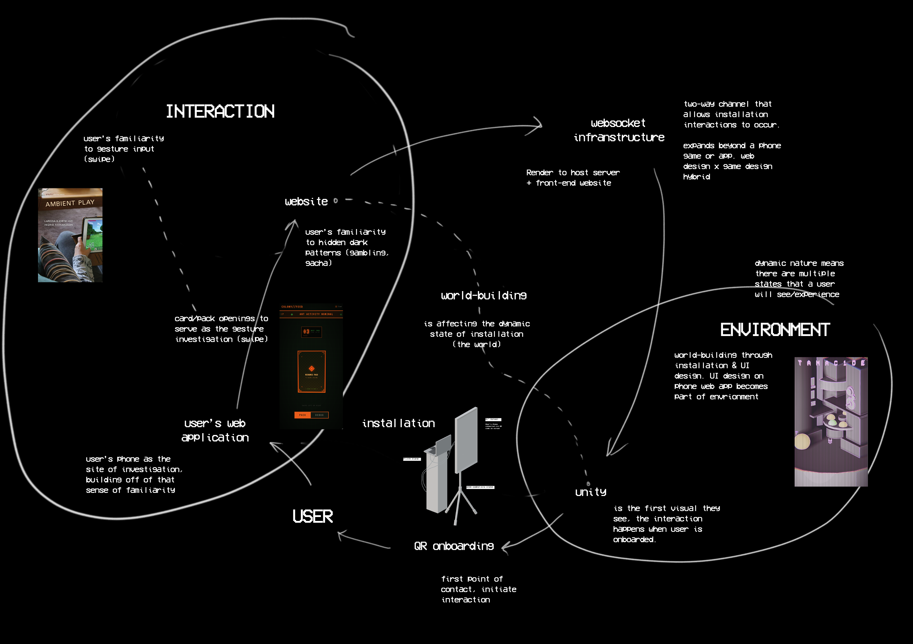

The CPS archival project was where the web-to-Unity link first materialised. A live connection between a browser-based front-end and a Unity environment. It was the technical proof-of-concept that everything which followed is built on. At this stage the infrastructure was the discovery, the content of the archive was secondary to the realisation that these two mediums could work in relation to one another, one needing the other to exist.
Studio 3 — Major Project · Folio 01 · MAGI · RMIT Melbourne
The Swipe-to-Reveal Series
To preface, this website is for archival purposes and documentation of conceptual evolution. It is a complementary guide for Folio 1 (eventually Folio 2), Studio 3. But also a recollection of how things came to be in anticipation of this major work. It's a living document and will be a complete compendium by the end of Studio.
Pre-Studio 3 → Studio 3
Practice Trajectory
Three and a Half Steps to This Project
This project doesn't emerge from nowhere. It is the latest iteration in a continuous trajectory of making, each phase depositing something the next one draws on, building toward from a CPS archival experiment that first proved the web-to-Unity link, through the installation that grew out of it, through a detour that stress-tested the infrastructure at scale, and finally into the two-part series that pulls everything back together.
Phase 1 · CPS
The CPS Archival Project
Character, Place & Simulation — first web-to-Unity experiment
On Phase 1
After many consultations with Chris Barker, what emerged out of that class was more-so the infrastructure and technique. The web-socket to Unity pipeline is the glue that holds all of these projects together.
Phase 2 · Late PPP
Held, Instantaneously
Professional Pre-Production — the infrastructure becomes the work
The infrastructure proved in CPS became the conceptual spine of Held, Instantaneously. Participants swiped fictional dating profiles on their phone browser, spawning NPCs that contributed to a digital terrarium displayed on screen. The surface-level veil was about dehumanisation in online dating. The deeper argument was that the swipe gesture carries weight, that there are consequences to those actions. It was a first attempt at magnifying the implication of the swipe.
A stress test at Abbotsford Convent (target audience 20–30yo) revealed that the gameplay loop was read as "intuitive", which proved Hjorth's findings about habitual behaviour, but it also exposed the central problem. Some people thought this was just a dating simulator. The critique was too fluent in the language of the thing it was critiquing that it disappeared into it. The veil had become the whole experience. This is the finding that drives everything that follows.
On Held, Instantaneously
I think I felt a little embarrassed when people asked me about my own dating experiences, that was when I decided I had to critique something more conceptually overt.
Phase 3.5 · Studio 3 Pivot
The Outdoor Festival — MediaPipe to Unity
The half-step: a commissioned detour that stress-tested the pipeline
The MediaPipe hand-tracking via Python UDP sidecar, the dual vertical displays, the flock/ASCII generative visual systems running in Unity HDRP. This became a pivot because I said yes to a commission that was non-RMIT. The issue arose when the curator told me this would have to be offline. I made a decision here, that I would stamp out a visual style for the works that would be carried over to a future version of the works, but make a hand-tracking interactive with the environment for the festival.
The pivot wasn't wasted. As I was working with the Python UDP sidecar, I used the webcam to detect whether a person's hand was present in front of the installation, to "activate" the installation. So before the person walked up to the works, they'd see an onboarding/instruction screen that dims out as soon as their hands are present in front of the webcam. I realised I can potentially use this to onboard users with the QR code as one of the feedback from Held, Instantaneously was that the onboarding wasn't clear enough for some.
On the pivot
The commission wasn't too much of a detour, it actually encouraged me to think of alternate ways of showcasing this concept without internet. Which I had followed through with. Although the work for the festival wasn't the concept it is now, it just felt like it was a spin-off episode of what was yet to come. Also had fun at my first camping bush-doof festival.
Phase 4 · Studio 3 Major Project
The Swipe-to-Reveal Series
Part I: Held, Instantaneously · Part II: Swipe 4 Colony
The Swipe-to-Reveal Series is a two-part response to what the first stress test revealed. Part I, Held, Instantaneously, is still a valid work. I wanted to honour that and have it serve as the introduction for the works to come. Part II, Swipe 4 Colony, shifts the veil from dating to addiction design and gambling mechanics, a subject that carries significantly more cultural unease and is harder to mistake for the real thing.
The infrastructure is carried forward. The web-to-Unity link, the phone as the site of argument, the installation form. What's left behind is the assumption that the veil can be as convincing as the thing it critiques. The first stress test set the threshold, that if the work is too fluent in UX, if it feels too easy, it doesn't interrupt the habit. It needs to expose it instead. Swipe 4 Colony is an attempt to sit just past that threshold.
On the return
I've always wanted to make this a series of works, I think it naturally honours the progression of ideas and conceptual voice that is often discarded when I decide I'm done with a project. Maybe part 1 is the onboarding experience, it sets the audience up and it sets the context up that perhaps the works are more than just a simulation of the thing it's trying to critique. And hopefully no more dating questions.
Phase 1 — CPS Archival Project
Each week served as a different kind of phone interaction linked to Unity. This was the first stress test.
Phase 2 — Held, Instantaneously
Thank you housemates for the unwavering support.
"is this touchscreen?" No, Marya, but your phone is

Caption — name the exhibition and describe what the audience encounter revealed

Caption — name the exhibition and describe what was different the second time
Phase 3.5 — Festival Pivot
The staging for the works was truly the real spectacle here.
The visual style is comprised of a dot matrix volume shader.
Phase 4 — The Swipe-to-Reveal Series

Swipe 4 Colony.

Caption — how does this diagram articulate the relationship between Part I and the returned Held, Instantaneously?
00
Week 1 Deliverable
Quick Pitch
The pitch was a web of thoughts since I really just wanted to consolidate an idea to be the veil for the web-socket infranstructure. In this case, the tecnical production materialised through CPS archival
Week 1 Quick Pitch
A continuation that builds on the technical infranstructure of WebSockets and Unity developed during the course of CPS.
Looking back
What has shifted since this was written? What still holds?
Pitch map — Week 1
Pitch map — the conceptual landscape at Week 1. Zoom in to read the annotations.
On these early images
Were these references accurate to what you ended up making? What do they reveal about your instincts before the research deepened?
01
Concept
Core Idea & Its Evolution
Can a designed gesture restore the intentionality that platform design has taken from it? The swipe is the argument. A two-part series built from what the first stress test revealed.
📝 The argument in one sentence
The work attempts to interrupt the swipe reflex for long enough for the person to notice they have one.
📝 How it has evolved
From a single installation into a two-part series. The threshold finding from Held, Instantaneously — that the veil was too convincing — drove the shift to gambling mechanics and the series structure.
Still open
Can an installation actually shift the way someone thinks about their phone? That question remains genuinely unanswered.
Concept evolution — visual evidence

Caption — walk through what this diagram is mapping and why these relationships matter to the work.
Before / after — concept artefacts

Early concept — what was the original idea?

Refined concept — what specifically changed?
On the before/after
What does placing these two images side by side reveal? Is the evolution logical in retrospect, or did it surprise you when you looked back?
02
Field
Situating the Work
Your work doesn't exist in a vacuum. This section makes visible your understanding of the broader landscape: practitioners, theorists, movements, and conversations your project is entering into.
Writing guide
- Identify 3–5 key works/practitioners — explain how they connect, not just that they do.
- Show what's already been done and where your work diverges, extends, or challenges it.
- Articulate significance: why does this inquiry matter to the field right now?
- Use specific language: "my work extends [X]'s notion of [Y] by…" not vague influence claims.
📝 Position statement — where does this work sit?
This practice sits at the intersection of adversarial design, interactive installation, and critical game studies. It enters a conversation that includes Ian Cheng's work on NPC agency and artificial life (BOB, 2018), Molleindustria's satirical games that critique digital capitalism (Phone Story, 2011), and Hjorth and Richardson's theorisation of ambient play as embodied, habitual interaction (2020). Where Cheng deals with the NPC's internal psychology, this work deals with the player's agency, specifically the designed erosion of it. Where Pedercini makes the critique explicit, this work embeds it in the form itself, using satire as a thin surface veil over a deeper structural argument.
📝 Significance — why does this inquiry matter to the field?
Hjorth frames the gesture as a form of ambient, haptic communication that carries social meaning beyond its functional purpose. This practice extends that argument into darker territory. What happens when that habitual reflex is systematically redirected towards consumption? The swipe is where the argument lives in the body. This work asks whether installation design can make that visible — whether art can interrupt a reflex that our devices are specifically engineered to make invisible. That's a question the field is only beginning to take seriously.
On field position
Is there a work in the field that makes you slightly anxious because it seems close to yours? What's the crucial difference? That tension often holds the most interesting positioning.
Practitioner / work references

Practitioner / Work / Text
[Name, title, year] — explain the connection in 2–3 sentences. What specifically do you take from or push against?

Practitioner / Work / Text
[Name, title, year] — what does this work prove is possible or necessary?

Practitioner / Work / Text
[Name, title, year] — how does this work relate to or diverge from your approach? Specificity is everything here.
On these references
Which of these did you discover before or after starting production? Does the order in which you encountered them matter to how your thinking developed?
03
Research ↔ Practice
Theoretical Framework
Three texts. Each one traces directly to a production decision. The full research document is in Teams.
Hjorth, L & Richardson, I — Ambient Play, MIT Press, 2020
📝 Concept → interpretation → production decision
Hjorth and Richardson argue that contemporary haptic touchscreens emphasise proprioception (the knowing, moving body) and afford diverse modes of engagement from distraction to the habitual. Mobile play has become so woven into daily routines it no longer has clear boundaries. This is the condition my work points at from the other side: the dark counterpart of ambient play is ambient extraction. The swipe gesture carries social meaning beyond its functional purpose, and my work argues that meaning has been hijacked, which directly informs the decision to use the swipe as the primary interaction in both parts of the series. Not as a convenient mechanic, but as the site of the argument itself.
DiSalvo, C — Adversarial Design, MIT Press, 2012
📝 Concept → interpretation → production decision
DiSalvo argues that designed objects can make political and social tensions tangible and irresolvable, refusing to smooth over conflict and instead holding it open for the person to sit inside. The Abbotsford stress test revealed the gap between adversarial intent and adversarial form: the work was a critique in intent, but not yet truly in form. This is what drives the shift to gambling mechanics in Swipe 4 Colony, a subject that carries enough cultural unease that the veil can't so easily become the whole experience. The person needs to catch themselves mid-swipe to notice the rupture. DiSalvo gives the language for why that rupture is the point.
Candy, L — Practice Based Research: A Guide, UTS, 2006
📝 Concept → interpretation → production decision
Candy describes practice-based research as knowledge gained not prior to making, but through it and because of it. The Abbotsford stress test is the clearest example of this in the lineage of this project. The finding that the work was too fluent in UX to interrupt it was not a theoretical prediction. It was discovered in the room. The entire architecture of the Swipe-to-Reveal Series is a response to knowledge that only became available through making. This methodology also validates the decision to keep making. Whether the argument can shift the way someone thinks about their phone is a question that consistent making is the only available method for answering.
On theory and making
Was there a moment in making where the theory felt inadequate or limiting? Did the practice push back against the theory, or did theory clarify something the making was obscuring?
Research → practice chain
Theory / Research
[Core theoretical concept — e.g. adversarial design, surveillance capitalism]
→
informs
informs
Design Decision
[The specific mechanic, interaction, or aesthetic choice made in response]
↓ results in
Artefact Evidence
Where this shows up in the prototype — see below
Caption — name which theoretical concept you're demonstrating. What would be different if the theory hadn't informed this choice?

Caption — what is this image evidence of? Point to specific elements and name the theory behind them.
On the theory-artefact gap
Are there aspects of the artefact that theory doesn't quite account for — things that emerged from making itself? That's worth naming explicitly.
04
Folio 1 Key Deliverable
Prototype & Vertical Slice
What the prototype proves and where it currently sits. Production detail is in the weekly Teams posts.
📝 What it demonstrates
What has been validated technically and conceptually through building this prototype?
📝 What's next
What doesn't work yet, and what are the immediate priorities?
Gap between imagined and built
What did making reveal that thinking alone couldn't?
Prototype demo
Caption — narrate what we're seeing. What interactions are demonstrated? What does this prove about viability?
Annotated screenshots

What design decision does this show?

What does this prove technically?

How does this communicate look and feel?
On the screenshots
Which of these is the most honest image of where the project is right now — not the most flattering, but the most revealing?
05
Technique
Exploiting the Medium
Why this stack for this idea. The phone browser and Unity aren't just tools — the relationship between them is the work.
📝 Stack justification
Why does this argument need a web app on a personal device talking to a shared Unity environment? What can that relationship do that a single-screen installation couldn't?
📝 A technical decision worth noting
One specific technical choice and why it matters to the experience. Screenshots and diagrams in the visual column.
Where the medium resists
What does the stack not do well, and how has that shaped the work?
System / technical architecture

Caption — walk through the data flow and system relationships shown here.
Technical craft evidence

Caption — what does this do and why does it matter to the experience?

Caption — what does this demonstrate about your command of the medium?
On technical decisions
Which technical decision are you most uncertain about in retrospect? Was it the right call, or a compromise made under time pressure?
06
Cohesion
Internal Consistency & Resolution
Does the visual language, interaction design, and concept all point in the same direction? Visual evidence is in the right column.
📝 Design principles
2–3 rules that govern every decision in this project, derived from the concept rather than aesthetic preference.
📝 A moment of correction
Something that felt wrong and what fixing it revealed about the work's internal logic.
Still unresolved
What part of the project hasn't fully assimilated into the whole yet?
Visual / design language

What aesthetic territory does this establish?

Why these choices? How do they serve the concept?

Point to elements that embody the design principles.
Most resolved section
Caption — explain what makes this "resolved." How do concept, aesthetics, and interaction come together here specifically?
On the resolved section
Was this section always going to be the resolved one — or did it become that through iteration? What did it take to get here, and can that process be replicated for the rest?
07
Required — 4 Weekly Posts
Production Journal
Teams posts are the primary record. Each entry here is a short annotation alongside the visual documentation — one key finding or shift per week.
📝 Key finding — Week 01
One key thing that emerged or shifted this week.
Week 1
What assumption got tested immediately?
📝 Key finding — Week 02
One key thing that emerged or shifted this week.
Week 2
What was the hardest decision this week?
📝 Key finding — Week 03
One key finding from the first real build.
Week 3
What did building reveal that thinking couldn't?
📝 Key finding — Week 04
Where the project sits at Folio 1 submission.
Week 4
What's the biggest unknown going into Phase 2?
Week 1 — visual documentation

Caption

Caption
Week 2 — visual documentation

Caption

Caption
Week 3 — visual documentation

Caption
Caption
Week 4 — visual documentation
Caption

Caption
08
Management
Scope, Planning & Iteration
What's in scope, what's been cut, and what the iteration cycle looked like. Timeline and before/after evidence in the visual column.
📝 Scope
What's confirmed for Folio 2 and what has been deferred or cut?
📝 One iteration cycle
Something built, found lacking, and remade. What did the cycle reveal?
Phase 2 priorities
- Priority 01
- Priority 02
- Priority 03
Hardest part to manage
Technical risk, conceptual uncertainty, or time? What's the honest answer?
Production plan

Caption — note deviations from the original plan and what drove the changes.
Iteration — before / after

Describe what this is and why it wasn't working.

What changed and what did the iteration reveal?
Additional process evidence
Caption — what does this document about your iterative process?
On the before/after
Does the gap between V1 and V2 feel big enough? Or does it look minor in retrospect — and if so, was it actually a significant decision that just looks small from the outside?